Linux防火墙技术
Linux防火墙技术
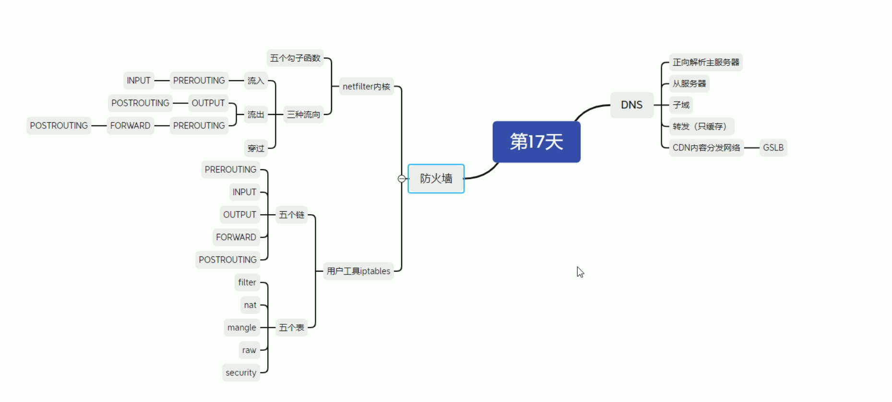
1 | |
基本的安全技术：
1.入侵检测系统：不阻拦外部攻击行为，检测出对应的攻击行为，一般都是监控系统，事后处理
2.入侵防御系统：阻断攻击行为，分析例如木马，蠕虫，系统漏洞等攻击行为，在线部署防火墙，SSH攻击，DDOS攻击等
3.防火墙：部署在整体网络架构的最外部，允许一些规则、流量流入，拒绝流量流入；
云环境：WAF(应用防火墙)，云防火墙(IP流量防火墙)
线下：部署在DMZ区，介于outbound和inbound之间，分为trust(信任区)和untrust(不信任区)
主机层面：防火墙，企业主机安全等(配额)
tar -xf：解压包
tar -czf：压缩包
tar -tvf：查看包内的文件
应用层防火墙：阿里云/华为云的WAF，用于url层面的防护，上传文件是否合法，大小写(七层)
网络层防火墙：边界防火墙，主要是针对IP层面的防护，流量级别的防护，IP+端口，包过滤防火墙
Internet：untrust区
防火墙
DMZ区：用于部署负载均衡，公司用的是硬件负载均衡F5，用于对外提供服务的服务区放置的，比如FTP服务器，WEB服务器网站等
内网：trust区，接入核心交换机—汇聚层—接入层等
Linux内核防火墙iptables
开源的防火墙功能，主要包括防火墙firewall，NAT以及数据包过滤等技术，存在于内核kernal中，无论是哪个防火墙软件，都是依赖于内核功能netfilter
centos6：iptables
centos7：firewalld
centos8：nft
1 | |
5个钩子函数：总入口PRE-ROUTING，INPUT(到内部)，OUTPUT(内部出去)，FORWARD(穿过本机出去)，POST-ROUTING(总出口)
称为chain(链子)
通过iptables可以控制五种协议的执行，放行某些数据包等
上层协议栈：内部访问的应用的协议，比如http/https，TCP/IP端口等；一般来说，访问到内部的服务，一般配置INPUT
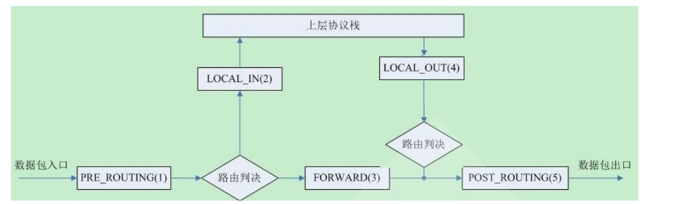
Linux netfilter内的5个表(5表5链)
每个chain对应一个钩子函数，5表5链，钩子函数称为webhook，钩子
5个表table：最主要：filter和NAT
filter：过滤规则，允许/拒绝某些流量流入，比如INPUT，OUPUT等
NAT：地址转换表，包括SNAT和DNAT
mangle：修改数据规则表
raw：加快通过防火墙的速度
security：强制安全规则，由SELINUX实现，/etc/
iptables基本参数(公有云iptables原理)
公有云iptables原理：默认拒绝所有
iptables -A INPUT -j REJECT
需要一条一条规则去放行，或者是端口，这些规则需要写在拒绝所有规则的前面，放xxx网段对应的端口，只不过做成了SAAS产品
1 | |
默认用的就是filter表，主要包括的chain链如下：
主要使用的chain：INPUT(输入)，FORWARD(转发)，OUTPUT(输出)
TCP三次握手协议：可以看到TCP连接的状态，一般都是有去有回的，比如SSH连接，建立了就是ESTABLISHED建立连接状态，或者是LISTENING监听状态，没和服务器建立连接
1 | |
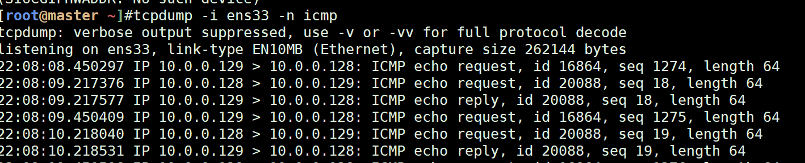
1 | |
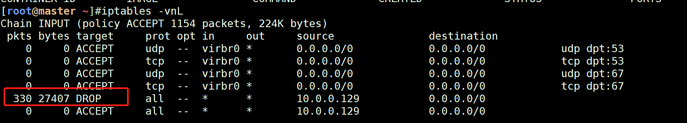
iptables基本匹配规则(基本功能)
按照插入的规则顺序进行过滤filter
1 | |
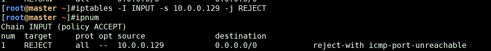
拒绝所有的10.0.0.129的包，只允许icmp包(插入顺序)，也可以-I指定插入的行数(条目数)
1 | |
iptables配置别名alias显示行号：alias ipnum=’iptables -nL –line-numbers’
默认iptables -nL不显示行号，–line-numbers显示行号
1 | |
配置永久保存iptables规则：services iptables save
在Cent OS 6下，由于本身就有/etc/sysconfig/iptables文件，所以只需要执行即可
1 | |
在Cent OS 7下，由于默认没有安装iptables.services服务，所以需要安装一下
1 | |
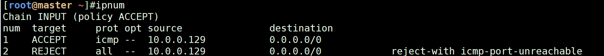
cat /etc/sysconfig/iptables：查看一下iptables配置文件，里面写的都是默认规则
iptables扩展模块(隐)
tcp/udp模块：默认隐式扩展模块，不需要写-m扩展模块，一般的写法是iptables -I INPUT -p tcp -m tcp/udp等这样
允许10.0.0.129访问128的httpd服务(80)端口，
1 | |
在10.0.0.129上访问10.0.0.128的80端口是成功的
curl k8s.catyer.cn
telnet k8s.catyer.cn 80
iptables扩展模块(显)：可以多个扩展模块组合
让httpd协议支持ssl：安装mod_ssl模块服务
yum -y install mod_ssl
systemctl enable –now httpd
1 | |

-m multiport –dports 80,443：批量添加端口，注意–dports加s
示例：一条iptables规则放通80,443端口，129能够访问128的443和80端口
先-p：表示跑什么协议，-m表示扩展模块为multiport，–dports记得s
1 | |
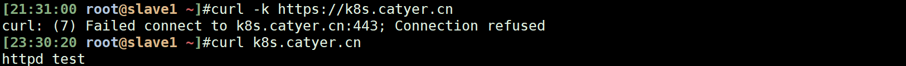
-N WEB-CHAIN：创建自定义链
自定义链：是一个模块化的东西，相当于是一个函数
iptables的链chain分为主链和自定义链，主链部分分为pre-routing，input，forward，output，post-routing，自定义链可以自行创建
1 | |
iptables -F：清空某个链(表)的规则
1 | |
iprange扩展：指定IP地址范围
1 | |
connlimit：限制访问服务端的连接并发数
限制客户端访问服务端的并发连接数，通常用于拒绝DDOS工具
1 | |
limit：限流经过的包
限制在一分钟内的流过的包
1 | |
泛洪攻击的python脚本：升级python版本至python 3.5.1
查看本机的python版本：python -V，需要升级python版本，执行python脚本
需要升级python版本到3以上
当在Python 2.X文件中写中文注释或输出中文时候，经常会出现编译错误（在Python 3.X中没有这种错误。）这是因为Python 2.X的默认编码文件是用ASCII码—-包括中文的注释
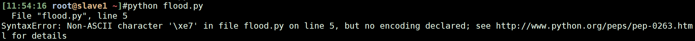
1 | |
泛洪攻击脚本：DDOS攻击，分布式的拒绝服务，泛洪攻击
1 | |
state扩展：根据追踪机制去检查连接状态(一般是ESTABLISHED)
面试题
这两条路径，都是Linux系统内可建立的最大连接数，上限并发，可以自己去设置
1 | |
系统最大连接数/proc/sys/net/netfilter/nf_conntrack_max
1 | |
查看系统日志(是linux系统日志)，证明是这个track表已经达到上限，直接丢包了(造成网站无法访问，访问的tcp连接直接中断)，需要恢复回去；类似的操作还有redis的最大连接上线并发，可以调整这个值
tail -f /var/log/messages
nginx-配置系统最大连接并发net.nf_conntrack_max(系统调优)—>面试题，配置内核配置文件sysctl.conf
需要修改系统内核参数配置文件：**/etc/sysctl.conf**
在生产系统中，通常有一些前端的机器需要用于转发外部的客户端请求，例如nginx等负载均衡服务器，需要配置一下net.nf_conntrack_max这个参数，免得并发一大系统就崩溃了，导致服务器无法执行转发服务
一键入职机器的net.nf_conntrack_max 参数，配置到了262144，因为是前端的nginx转发机器，转发到各个server中，转发到各个服务器组中
1 | |
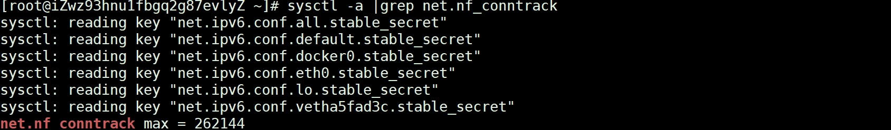
连接跟踪模块(系统参数)的开启，是有加载这个内核模块的，加载这个模块，最大连接数参数才能启动
1 | |
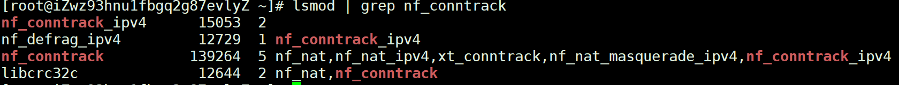
解决方案：
1.调大nf_conntrack_max的值
1 | |
2.可设置tcp连接timeout超时时间，减少超时时间
1 | |
state模块应用
-m state分为：NEW，ESTABLISHED，RELATED，INVALID等state状态，最重点就是NEW和ESTABLISHED，新连接(新机器请求)和已经建立的连接(老机器SSH连接等，telnet连接等)
1.128能访问129,129不能访问128
原理：拒绝所有来自10.0.0.129的新连接(新的tcp包)，128的出方向(output)没有限制，所以就是128能通129
1 | |
2.允许已经建立连接的老机器访问state established
原理：已与本机建立连接的客户端，比如SSH连接，还可以连，其他的拒绝访问，可以插在默认的拒绝所有
1 | |
TARGET：-j动作
TARGET主要模块有：ACCEPT，REJECT，DROP(丢包)，LOG(记录到日志中)
iptables规则优化最佳实践
主要是看主机在通过iptables所需要经过的过滤规则，如何配置性能更优
1.ESTABLISHED的连接，比如可以查看cat /proc/net/nf_conntrack查看已经建立连接的客户端，可以放在前面
2.入站新请求，-m state –state NEW，可以将其REJECT，谨慎放行
1 | |
3.默认所有都是拒绝，在拒绝的大段前面放行该放行的小段
1 | |
4.访问同一类应用，比如http 80端口，拒绝10.0.0.0/24，允许10.0.0.129访问，129放大段前面，大段包含小段，优先找小段
1 | |
5.不同类应用，mysql&http，匹配大的放前面
6.匹配多个端口，多个地址，放一起
1 | |
7.配置类似公有云安全组的方式，默认拒绝所有，需要放行才加白
1 | |
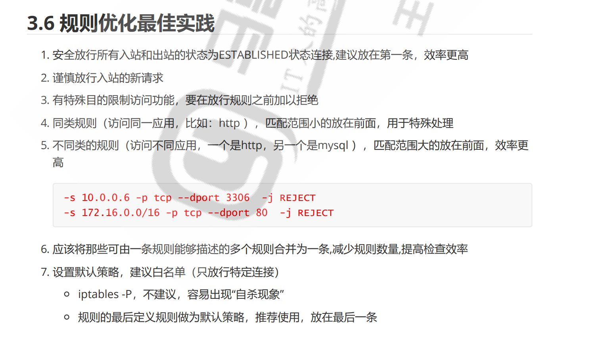
iptables规则的保存
对于Cent OS 7及以上，将规则重定向到指定文件
1 | |
如果误删除，可以使用，这个是标准输入交互，将文件内容输入进去即可，这个保存文件可以拷贝给其他主机
1 | |
可以将这个写进开机自启动的脚本内，但是需要确保这个iptables/rules文件要在
1 | |
安装service的方法
可以安装iptables.service的包，默认的iptables规则路径在/etc/sysconfig/iptables.service
1 | |
可以使用iptables-save将规则保存在文件中
1 | |
iptables网络FORWARD配置
实现：内访问外部主机，外部主机不能访问到内部
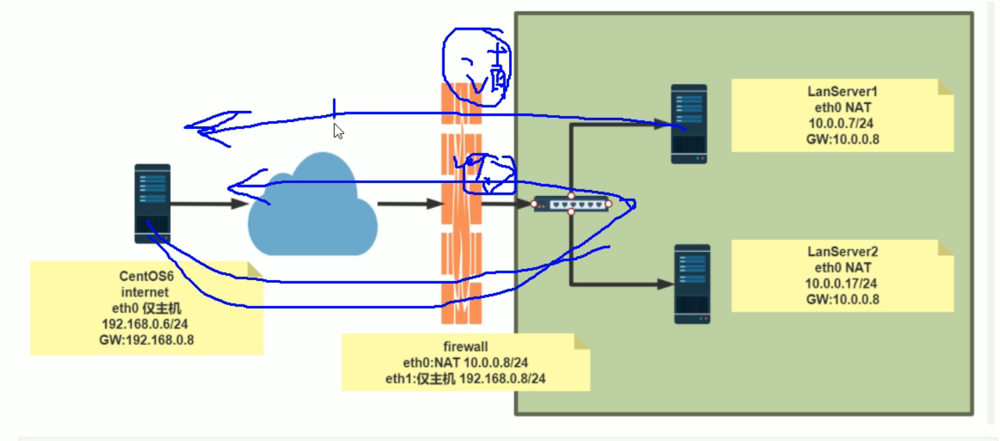
1 | |
目前测试：从内部10.0.0.129能联通172.16.0.128/24，外部进不来
1 | |
实现转发FORWARD配置，实现内部curl外部机器，仅有外部机器这个IP能够访问内部
1 | |
iptables实现SNAT和DNAT
SNAT：源地址转换，内网能够访问公网，哪边出
DNAT：目的地址转换，目的能够访问内网，NAT网关起到一个转发的作用，转发到目的IP的目的端口
一般在企业内部，SNAT用于内部机器上网，比如k8s集群内的node节点；外部访问一般使用SLB负载均衡或者是直接机器的公网IP解析到域名，通过SLB/机器的安全组规则进行流量的过滤
同一台机器的SNAT规则：根据业务端口的不同划分
不同机器相同业务的SNAT规则：根据IP地址的不同划分
SNAT：必须要配置内网地址，私网三类地址
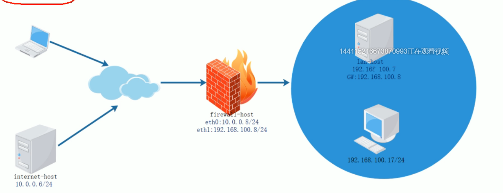
NAT表的四个链：PRE-ROUTING，INPUT，OUTPUT，POST-ROUTING，需要在POST-ROUTING chain上面配置，向外的地址转换NAT
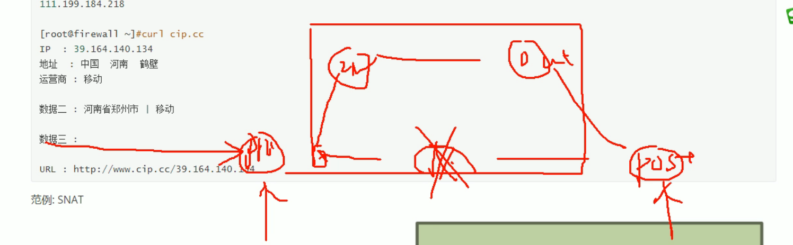
从POST-ROUTING转发出去
1 | |
iptables实现DNAT(外访问内)
访问到iptables默认的出公网地址(NAT网关的IP)，由这个地址转发到内部的请求，访问内部的应用+端口号；DNAT规则就是默认的IP了，不会有动态IP的情况，一般的NAT网关/SLB的IP都为固定
从PREROUTING进去，目的IP为iptables的公网网卡
1 | |
iptables实现重定向REDIRECT(有点问题，不如直接DNAT)
同样也是在PREROUTING上面写，通过NAT网关的IP:80转发到后端的8080端口，类似SLB的
1 | |
综合案例
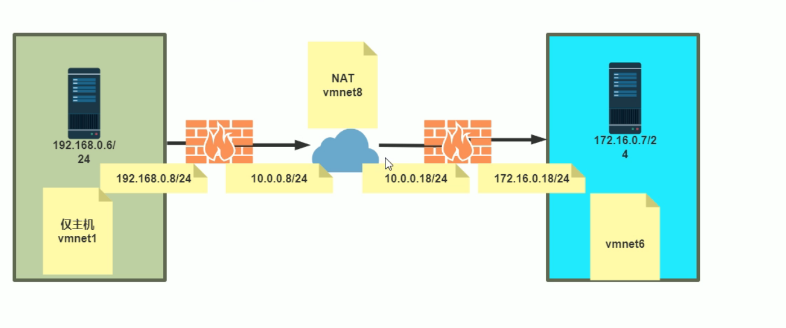
iptables实现VPN搭建(周末可以研究这个脚本)
Cent OS搭建l2tp
方案一：通过获取现成L2PT脚本搭建
1、拉取脚本
wget –no-check-certificate https://raw.githubusercontent.com/teddysun/across/master/l2tp.sh
2、更改权限
chmod +x l2tp.sh
3、跑脚本
./l2tp.sh
wget –no-check-certificate https://raw.githubusercontent.com/teddysun/across/master/l2tp.sh
4、显示Please enter IP-Range
输入：10.0.10 .0 （表示分给客户端的IP段）
5、显示Please enter PSK
输入：123456 （自定义PSK，随便英文数字都可）
6、显示Please enter Username
输入：123456 （自定义用户名）
7、显示Please enter 123456’s password
输入：123456 （自定义密码）
8、后面一直enter即可，成功后会返回主要信息。
注意点：如果WIN10客户端连接不上，需要更改注册表
打开regedit
找到HKEY_LOCAL_MACHINE\System\CurrentControlSet\Services\Rasman\Parameters
新建 Value Name: ProhibitIpSec
Data Type: REG_DWORD
Value: 1
备注：
如果你要想对用户进行操作，可以使用如下命令：
l2tp -a 新增用户
l2tp -d 删除用户
l2tp -m 修改现有的用户的密码
l2tp -l 列出所有用户名和密码
l2tp -h 列出帮助信息
其他事项：
1、脚本在安装完成后，已自动启动进程，并加入了开机自启动。
2、脚本会改写 iptables 或 firewalld 的规则。
3、脚本安装时，会即时将安装日志写到 /root/l2tp.log 文件里，如果你安装失败，可以通过此文件来寻找错误信息。
使用命令：
ipsec status （查看 IPSec 运行状态）
ipsec verify （查看 IPSec 检查结果）
/etc/init.d/ipsec start|stop|restart|status （CentOS6 下使用）
/etc/init.d/xl2tpd start|stop|restart （CentOS6 下使用）
systemctl start|stop|restart|status ipsec （CentOS7 下使用）
systemctl start|stop|restart xl2tpd （CentOS7 下使用）
service ipsec start|stop|restart|status （Debian/Ubuntu 下使用）
service xl2tpd start|stop|restart （Debian/Ubuntu 下使用）
方案二：自建L2PT
1.安装 l2tp ipsec 所需要的软件包
yum install epel-release
yum install openswan xl2tpd ppp lsof
2.设置ipsec
2.1 编辑 /etc/ipsec.conf
vi /etc/ipsec.conf
把下面xx.xxx.xxx.xxx换成你自己主机实际的外网固定IP。其他的不动。
config setup
protostack=netkey
dumpdir=/var/run/pluto/
nat_traversal=yes
virtual_private=%v4:10.0.0.0/8,%v4:192.168.0.0/16,%v4:172.16.0.0/12,%v4:25.0.0.0/8,%v4:100.64.0.0/10,%v6:fd00::/8,%v6:fe80::/10
conn L2TP-PSK-NAT
rightsubnet=vhost:%priv
also=L2TP-PSK-noNAT
conn L2TP-PSK-noNAT
authby=secret
pfs=no
auto=add
keyingtries=3
dpddelay=30
dpdtimeout=120
dpdaction=clear
rekey=no
ikelifetime=8h
keylife=1h
type=transport
left=xxx.xxx.xxx.xxx
leftprotoport=17/1701
right=%any
rightprotoport=17/%any
2.2 编辑/etc/ipsec.secrets
vi /etc/ipsec.secrets
include /etc/ipsec.d/default.secrets
/etc/ipsec.secrets 文件里面默认有一句包含
/etc/ipsec.d/*.secrets
的语句.所以可以直接在 /etc/ipsec.d 目录下新建一自己的个 default.secrets 文件.也可以直接把它注释掉,添加下面的配置语句.
vi /etc/ipsec.d/my.secrets
xxx.xxx.xxx.xxx %any: PSK “kuaile”
xx.xxx.xxx.xxx换成你自己VPS实际的外网固定IP, YourPsk你自己定一个，到时候连VPN的时候用，比如可以填csdn.net, 注意空格。
2.3 修改/添加 /etc/sysctl.conf
vi /etc/sysctl.conf
确保下面的字段都有，对应的值或下面一样。省事的话直接在/etc/sysctl.conf的末尾直接把下面内容的粘过去。
net.ipv4.ip_forward = 1
net.ipv4.conf.default.accept_redirects = 0
net.ipv4.conf.default.send_redirects = 0
net.ipv4.conf.eth0.rp_filter = 0
net.ipv4.conf.default.rp_filter = 0
2.4 让修改后的sysctl.conf生效
sysctl -p
2.5 验证ipsec运行状态
ipsec setup start
ipsec verify
verify的内容如下所示，那么就离成功不远了。没有 红色 的fail 就可以了.
Verifying installed system and configuration files
Version check and ipsec on-path [OK]
Libreswan 3.15 (netkey) on 3.10.0-123.9.3.el7.x86_64
Checking for IPsec support in kernel [OK]
NETKEY: Testing XFRM related proc values
ICMP default/send_redirects [OK]
ICMP default/accept_redirects [OK]
XFRM larval drop [OK]
Pluto ipsec.conf syntax [OK]
Hardware random device [N/A]
Two or more interfaces found, checking IP forwarding [OK]
Checking rp_filter [OK]
Checking that pluto is running [OK]
Pluto listening for IKE on udp 500 [OK]
Pluto listening for IKE/NAT-T on udp 4500 [OK]
Pluto ipsec.secret syntax [OK]
Checking ‘ip’ command [OK]
Checking ‘iptables’ command [OK]
Checking ‘prelink’ command does not interfere with FIPSChecking for obsolete ipsec.conf options [OK]
Opportunistic Encryption [DISABLED]
\3. 设置 l2tp
3.1 编辑 /etc/xl2tpd/xl2tpd.conf
vim /etc/xl2tpd/xl2tpd.conf
[global]
ipsec saref = yes
listen-addr = xxx.xxx.xxx.xxx ;这里是你的主机外网ip地址,;号是注释,和一般的配置文件不同
; Use refinfo of 22 if using an SAref kernel patch based on openswan 2.6.35 or
; when using any of the SAref kernel patches for kernels up to 2.6.35.
; saref refinfo = 30
;
force userspace = yes
;
; debug tunnel = yes
[lns default]
ip range = 10.0.10.2-10.0.10.100 ;这里是VPN client的内网ip地址范围
local ip = 10.0.10.1 ;这里是VPN server的内网地址
refuse chap = yes
refuse pap = yes
require authentication = yes
name = LinuxVPNserver
ppp debug = yes
pppoptfile = /etc/ppp/options.xl2tpd
length bit = yes
3.2 编辑 /etc/ppp/options.xl2tpd
vi /etc/ppp/options.xl2tpd
name l2tpd
require-mschap-v2
ms-dns 180.76.76.76
ms-dns 223.5.5.5
ms-dns 8.8.8.8
ipcp-accept-local
ipcp-accept-remote
#ms-dns 8.8.8.8
noccp
auth
crtscts
idle 1800
mtu 1410
mru 1410
nodefaultroute
debug
lock
proxyarp
connect-delay 5000
3.3 配置用户名,密码:编辑 /etc/ppp/chap-secrets
vim /etc/ppp/chap-secrets
client和secret自己填，server和IP留号，l2tp 可以用上面自己设定的 l2tpd . 通用
# Secrets for authentication using CHAP
# client server secret IP addresses
ison * 123456 *
3.4 启动xl2tp
service xl2tpd start
\4. 开放端口以及转发
原样执行下面所有命令
/sbin/iptables -A INPUT -p udp -m policy –dir in –pol ipsec -m udp –dport 1701 -j ACCEPT
/sbin/iptables -A INPUT -p udp -m udp –dport 1701 -j ACCEPT
/sbin/iptables -A INPUT -p udp -m udp –dport 500 -j ACCEPT
/sbin/iptables -A INPUT -p udp -m udp –dport 4500 -j ACCEPT
/sbin/iptables -A INPUT -p esp -j ACCEPT
/sbin/iptables -A INPUT -m policy –dir in –pol ipsec -j ACCEPT
/sbin/iptables -A FORWARD -d 10.0.10.0/24 -j ACCEPT
/sbin/iptables -A FORWARD -s 10.0.10.0/24 -j ACCEPT
/sbin/iptables -A FORWARD -i ppp+ -m state –state NEW,RELATED,ESTABLISHED -j ACCEPT
/sbin/iptables -A FORWARD -m state –state RELATED,ESTABLISHED -j ACCEPT
/sbin/iptables -t nat -A POSTROUTING -s 10.0.10.0/24 -o eth0 -j MASQUERADE
再执行下面保存iptables
service iptables save
service iptables restart
添加开机自启动
systemd enabled ipsec
systemd enabled xl2tpd
如果连接不上的话, 先关掉iptalbes试试 service iptables stop
如果这时还连不上了，那么就是iptables的问题了
特别注意iptables里的顺序， INPUT和FORWARD里的REJECT一定是写在最后面，否则写在他们之后的port就都被REJECT了！
下面是我自己的iptables，可供参考
#############
*nat
:PREROUTING ACCEPT [3:160]
:INPUT ACCEPT [3:160]
:OUTPUT ACCEPT [3:180]
:POSTROUTING ACCEPT [3:180]
-A POSTROUTING -s 10.0.10.0/24 -o eth0 -j MASQUERADE
COMMIT
# Completed on Sat Mar 18 22:21:34 2017
# Generated by iptables-save v1.4.21 on Sat Mar 18 22:21:34 2017
*filter
:INPUT ACCEPT [237:33515]
:FORWARD ACCEPT [0:0]
:OUTPUT ACCEPT [162:45870]
-A INPUT -m state –state ESTABLISHED,RELATED -j ACCEPT
-A INPUT -p icmp -j ACCEPT
-A INPUT -i lo -j ACCEPT
-A INPUT -m state –state NEW -m tcp -p tcp –dport 80 -j ACCEPT
-A INPUT -m state –state NEW -m tcp -p tcp –dport 443 -j ACCEPT
-A INPUT -m state –state NEW -m tcp -p tcp –dport 22 -j ACCEPT
-A INPUT -p udp -m policy –dir in –pol ipsec -m udp –dport 1701 -j ACCEPT
-A INPUT -p udp -m udp –dport 1701 -j ACCEPT
-A INPUT -p udp -m udp –dport 500 -j ACCEPT
-A INPUT -p udp -m udp –dport 4500 -j ACCEPT
-A INPUT -p esp -j ACCEPT
-A INPUT -m policy –dir in –pol ipsec -j ACCEPT
-A FORWARD -d 10.0.10.0/24 -j ACCEPT
-A FORWARD -s 10.0.10.0/24 -j ACCEPT
-A FORWARD -i ppp+ -m state –state NEW,RELATED,ESTABLISHED -j ACCEPT
-A FORWARD -m state –state RELATED,ESTABLISHED -j ACCEPT
-A INPUT -j REJECT –reject-with icmp-host-prohibited
-A FORWARD -j REJECT –reject-with icmp-host-prohibited
COMMIT
# Completed on Sat Mar 18 22:21:34 2017
firewalld防火墙工具
分为命令行工具和图形化工具
1 | |
本博客所有文章除特别声明外，均采用 CC BY-SA 4.0 协议 ，转载请注明出处！